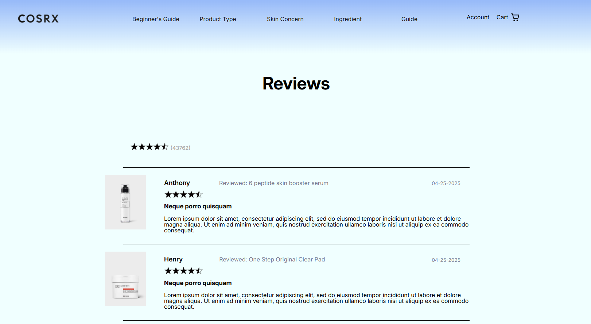

Redesigning an e-commerce experience to improve usability, minimalism, transparency, and trust.
Role: UX/UI Designer
Methods: Heuristic evaluation, competitive analysis
Tools: Figma, VS Code, Chrome dev tools
Timeline: 2 weeks

COSRX is a company built around a minimalist approach to skincare, with an emphasis on transparency, simplicity, and trust. I wanted to explore whether its digital experience was delivering on these same principles, and identify opportunities to make the experience clearer and easier to navigate without compromising the brand's visual identity.
Through a heuristic evaluation of two key pages, I identified several usability issues that made for a less than ideal experience. Important information was difficult to scan, some interactions created misleading expectations, and the hierarchy of content did not always reflect what users needed to accomplish.
These issues weren't limited to visual inconsistencies. They created friction between the interface and the user's goals, particularly when users needed to understand information, navigate the site, or in moments of critical decision-making.
For a skincare brand, trust and transparency are especially important. Users need to feel confident that they can find the information they need and understand what will happen when they interact with the interface.
However, their website carries several issues that actively work against the brand's own values. My goal, therefore, was not simply to make the pages look cleaner, but to create an experience where the interface better supported transparency, trust, and minimalism while enabling confident decision-making.